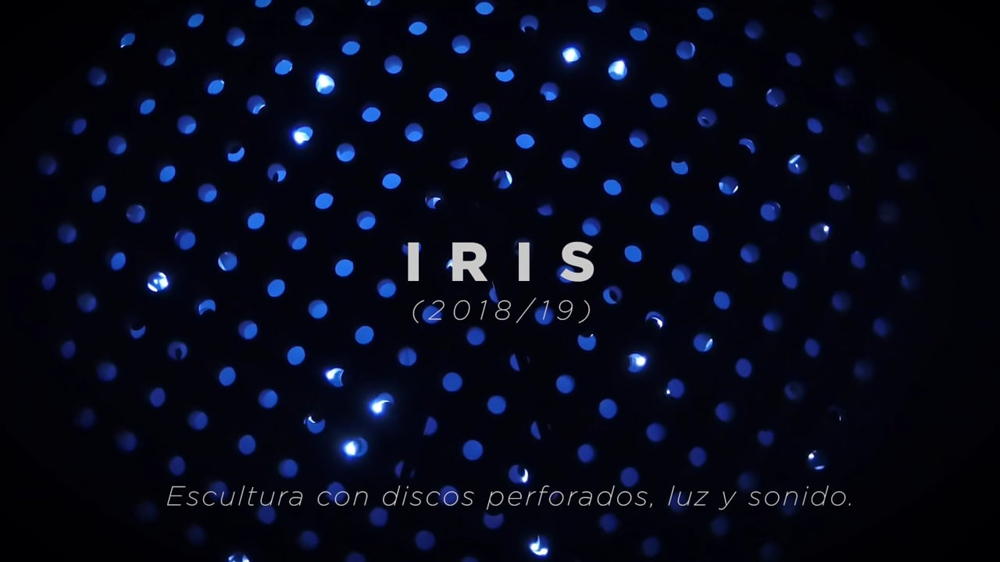

I work with sound, acoustics and auditory perception through installations, virtual environments and collaborative projects.
01—06
Selected works
Six projects exploring relationships between sound, materials, bodies and place.

Sonic Crystal Room

The Wind Chimes

IRIS

Transit

Proyecto GRAPa

Biocenosis
About
Artistic practice and scientific research

I am based in Buenos Aires. I founded LAPSo, the Laboratory of Acoustics and Sound Perception at Universidad Nacional de Quilmes, in 2007, and Proyecto GRAPa in 2017.
My professional background is research in physics, nonlinear dynamics, neuroscience and acoustics. For 25 years, I have worked at an art school, training artists and connecting art and science through laboratory work and international collaborations. My artistic practice has developed through this work.
I develop works based on current questions in sound, acoustics and auditory perception. These projects examine how acoustic materials affect listening, how virtual environments alter the perception of space, and how musical practices relate to their acoustic surroundings.
I use scientific models, experiments and technical development to explore particular spaces, acoustic conditions and ways of listening.
The laboratory, the classroom, the work
At LAPSo, we work as researchers and artists on acoustic experimentation, sound spatialization, instrument design, auditory perception and virtual environments.
I teach and supervise projects in music, performance and the visual arts. I also supervise doctoral work across science, art and technology and contribute to international workshops with participants from different disciplines.
Work in progress
Current research: acoustic time reversal
Current experiments extend research on acoustic time reversal to pulses travelling through steel sheets. The work examines how bending the surface changes sound focusing, timbre and radiation, and how these changes relate to gesture and spatial listening.
Workshops at Performing Arts Forum
I participate in the L.I.F.E. project initiated by Gabriel Catren at the Performing Arts Forum in Saint-Erme, France. In these workshops, we explore scientific and mathematical questions through collective artistic experimentation.
- 2022
Deeply Organized Chaos
Workshop leader. Chaos and complexity explored through accessible concepts, fractals, sound experiments and embodied experience. 7–13 July.
- 2023
Hot Identities and Vicious Abstractions
Assisted Gabriel Catren, with Jonathan Lorand, in a workshop on the foundations of mathematics. 21–29 October.
- 2025
The Infinite, the Infinitesimal and the Imaginary
Assisted Gabriel Catren, with Jonathan Lorand and Emily Roff. An exploration of calculus, infinity and mathematical thought. 20–28 October.
Selected international collaborations
Sound design and technical development in collaboration with the authors of these works.
- 2023–2024
Beehive / Colmena
Jorge Macchi
Multichannel sound realization. What the Night Tells the Day, PAC, Milan.
- 2023
Glockenbuch IV (Spectre Maria dei Carmini)
Marcus Schmickler, in collaboration with Julian Rohrhuber
Multichannel sound collaboration. Sound Microscopies programme, Biennale Musica, Venice.
- 2021
Reliquias
Jorge Caterbetti
Technical collaboration on the installation dedicated to Julio López. Centro Cultural Kirchner, Buenos Aires.
- 2020
La Cathédrale engloutie
Jorge Macchi
Development of the sound installation, with UNQ support. Musée cantonal des Beaux-Arts, Lausanne. 10 September–22 November.
- 2019
Huella Sonora / Alfombra Sonora
Jorge Caterbetti
Technical collaboration on an interactive sound installation within Green Carpet. Centro Cultural de la Ciencia, Buenos Aires.
Selected CV
Selected work in research, teaching and artistic practice.
Research & teaching
- 2026–
Director, ArCiTeS
Instituto de Investigaciones en Arte, Ciencia, Tecnología y Sociedad, Universidad Nacional de Quilmes.
- 2019–
Full Professor
Escuela Universitaria de Artes, Universidad Nacional de Quilmes.
- 2017
Founder, Proyecto GRAPa
Grupo de Relevamiento Acústico del Patrimonio.
- 2007
Founder, LAPSo
Laboratory of Acoustics and Sound Perception, Universidad Nacional de Quilmes.
CONICET researcher
Physics, nonlinear dynamics, neuroscience and acoustics.
I direct Perspectiva Acústica, Etapa II (2025–2029), a UNQ research programme comprising seven projects.
Education
- 2002
PhD in Physics
Universidad de Buenos Aires.
- 1998
Licenciatura in Physics
Universidad de Buenos Aires.
Exhibitions, residencies & support
- 2024
Sonic Crystal Room
Festival de Nueva Ópera, opening programme, cheLA, Buenos Aires. With Oscar Edelstein.
- 2023
Transit · Artist residency & commission
Northern Sustainable Futures, Moskosel, Sweden. With Mauro Zannoli, for iM Konsthall.
- 2022
Biocenosis · 13th Mercosul Biennial
Porto Alegre, Brazil. Sigismond de Vajay & Kevin Lesquenner + LAPSo.
- 2021
Latin GRAMMY Cultural Foundation Research Grant
With Proyecto GRAPa: recording canto con caja in its original acoustic environments.
- 2019
Sonic Crystal Room · First presentation
Auditorio Nicolás Casullo, Universidad Nacional de Quilmes, Bernal.
- 2019
IRIS · Sonic Crystal Room programme
Scientific advice and development with Leonardo Salzano. UNQ, Bernal.
- 2011
The Wind Chimes / Lluvia de Arañas sobre el Riachuelo
Instrument design, construction and performance with Buenos Aires Sonora and LAPSo. La Noche de los Museos, Buenos Aires.
Selected publications
Selected studies on sonic crystals, acoustic time reversal, spatial perception, musical timbre and sound synthesis.
- 2026Perception in virtual environments
- 2026Nonlinear dynamics as a sound material
- 2025Sonic crystals and acoustic communication
- 2022Acoustic materials and musical performance
- 2021Sonic crystals and time-reversal focusing
- 2017Acoustic context and spatial perception
- 2015Sonic crystals and perceived distance
- 2014Multiphonics, timbre and musical practice